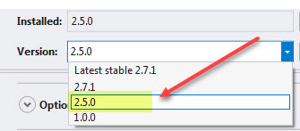

Alternate methods for with Microsoft Excel in VB.NET projects
Building the Sample
SpreadSheet library has a dependency on a NugGet package DocumentFormat.OpenXml where when downloaded from NuGet installs the lastest version. For SpreadSheetLight to work select version 2.5.0.
For the included solution first thing to do is right click on the Solution and select "restore NuGet Packages" followed by cleaning then rebuilding the solution.
There is one form set as the main form. Each form has a clearly defined name, to try out the code go into project properties and change the startup form, rebuild/run.

Description
This code sample provides an alternate from Excel automation and OleDb methods for working with Excel 2007 format files and does not work with the older format (.xls). Although the code samples are desktop based, they can be used for web applications also.
Just about every developer at one time or another has a requirement to export, import data from various sources. A common examples
- Export DataGridView data to Excel WorkSheet
- Import Excel WorkSheet data to another source such as a DataTable or database table.
- Insert new data into a WorkSheet
- Delete existing data from a WorkSheet
- Edit existing data from a WorkSheet (which means one needs to locate existing data).
Things to consider when looking at soultions
- Will formatting of cells be required
- Is there requirements to add/remove/rename WorkSheets
- Will images and charts need to be considered
The above considerations if needed will mean using OleDb methods are not viable as you can not format cells, remove WorkSheets or work with images and charts or formulas.
Must at this point will look towards Excel automation which can handle all those considerations yet comes at a price and the prices are.
- Writing a good deal of code where the path to compete a task is daunting because there are no great examples on the web.
- Most developers never consider (until it smacks them in the face) disposal of objects used to work with Excel. Although this is about VB.NET I direct you to my code sample on this topic for C# and one of my VB.NET code samples which uses pretty much the same pattern, another code sample (VB.NET and C#) for working with OleDb which goes along with the first set of bullets.
With the above in mind, I would suggest the following options
- Consider using a paid third party library dedicated to working with Excel where most don't require Excel to be installed such as Aspose Cells, GemBox, or EPPlus. All these libraries are pay to use.
- Another option that is no cost, Open XML SDK which requires a great deal of knowledge to properly compete even simple task.
- Using a free edition of a library, SpreadSheetLight which has a paid version too.
What I recommend is trying out SpreadSheetLight if on a budget while if funds are available Aspose Cells.
Let's get into examples


Best of best worlds for most tasked needed when working with Excel is SpreadSheetLight. The attached solution works solely with SpreadSheetLight.
The main disadvantages of this library for VB.NET is that there are zero code samples for VB.NET. If you have no C# skills and attempt to convert to VB.NET while learning this library my guess is one will get frustrated and give up. This is one of the main reasons I wrote the code samples.
I suggest downloading the solution along with downloading the SpreadSheet help file from their site.
Let's look at what it takes to open an Excel file to a Worksheet via Excel automation.
Option Strict On Option Infer Off Imports System.Runtime.InteropServices Imports Excel = Microsoft.Office.Interop.Excel Public Module OpenWorkBookSimple Public Sub OpenExcelSimple(ByVal FileName As String, ByVal SheetName As String) If IO.File.Exists(FileName) Then Dim Proceed As Boolean = False Dim xlApp As Excel.Application = Nothing Dim xlWorkBooks As Excel.Workbooks = Nothing Dim xlWorkBook As Excel.Workbook = Nothing Dim xlWorkSheet As Excel.Worksheet = Nothing Dim xlWorkSheets As Excel.Sheets = Nothing Dim xlCells As Excel.Range = Nothing xlApp = New Excel.Application xlApp.DisplayAlerts = False xlWorkBooks = xlApp.Workbooks xlWorkBook = xlWorkBooks.Open(FileName) xlApp.Visible = False xlWorkSheets = xlWorkBook.Sheets ' ' For/Next finds our sheet ' For x As Integer = 1 To xlWorkSheets.Count xlWorkSheet = CType(xlWorkSheets(x), Excel.Worksheet) If xlWorkSheet.Name = SheetName Then Proceed = True Exit For End If Marshal.FinalReleaseComObject(xlWorkSheet) xlWorkSheet = Nothing Next If Proceed Then Dim sb As New Text.StringBuilder Dim Cells As String() = {"A1", "B2", "B3", "B4"} For Each cell As String In Cells Try xlCells = xlWorkSheet.Range(cell) sb.AppendLine(String.Format("{0} = '{1}'", cell, xlCells.Value)) Catch ex As Exception ReleaseExcelObject(xlCells) End Try Next Else ' sheet not found End If xlWorkBook.Close() xlApp.UserControl = True xlApp.Quit() ReleaseExcelObject(xlCells) ReleaseExcelObject(xlWorkSheets) ReleaseExcelObject(xlWorkSheet) ReleaseExcelObject(xlWorkBook) ReleaseExcelObject(xlWorkBooks) ReleaseExcelObject(xlApp) Else ' file does not exists End If End Sub Private Sub ReleaseExcelObject(ByVal excelObject As Object) Try If excelObject IsNot Nothing Then Marshal.ReleaseComObject(excelObject) excelObject = Nothing End If Catch ex As Exception excelObject = Nothing End Try End Sub End Module
Option Strict On Option Infer Off Imports System.Runtime.InteropServices Imports Excel = Microsoft.Office.Interop.Excel Public Module OpenWorkBookSimple Public Sub OpenExcelSimple(ByVal FileName As String, ByVal SheetName As String) If IO.File.Exists(FileName) Then Dim Proceed As Boolean = False Dim xlApp As Excel.Application = Nothing Dim xlWorkBooks As Excel.Workbooks = Nothing Dim xlWorkBook As Excel.Workbook = Nothing Dim xlWorkSheet As Excel.Worksheet = Nothing Dim xlWorkSheets As Excel.Sheets = Nothing Dim xlCells As Excel.Range = Nothing xlApp = New Excel.Application xlApp.DisplayAlerts = False xlWorkBooks = xlApp.Workbooks xlWorkBook = xlWorkBooks.Open(FileName) xlApp.Visible = False xlWorkSheets = xlWorkBook.Sheets ' ' For/Next finds our sheet ' For x As Integer = 1 To xlWorkSheets.Count xlWorkSheet = CType(xlWorkSheets(x), Excel.Worksheet) If xlWorkSheet.Name = SheetName Then Proceed = True Exit For End If Marshal.FinalReleaseComObject(xlWorkSheet) xlWorkSheet = Nothing Next If Proceed Then Dim sb As New Text.StringBuilder Dim Cells As String() = {"A1", "B2", "B3", "B4"} For Each cell As String In Cells Try xlCells = xlWorkSheet.Range(cell) sb.AppendLine(String.Format("{0} = '{1}'", cell, xlCells.Value)) Catch ex As Exception ReleaseExcelObject(xlCells) End Try Next Else ' sheet not found End If xlWorkBook.Close() xlApp.UserControl = True xlApp.Quit() ReleaseExcelObject(xlCells) ReleaseExcelObject(xlWorkSheets) ReleaseExcelObject(xlWorkSheet) ReleaseExcelObject(xlWorkBook) ReleaseExcelObject(xlWorkBooks) ReleaseExcelObject(xlApp) Else ' file does not exists End If End Sub Private Sub ReleaseExcelObject(ByVal excelObject As Object) Try If excelObject IsNot Nothing Then Marshal.ReleaseComObject(excelObject) excelObject = Nothing End If Catch ex As Exception excelObject = Nothing End Try End Sub End Module
Public Sub OpenExcelSimple(ByVal FileName As String, ByVal SheetName As String)
Using sl As New SLDocument(FileName, SheetName)
Dim sb As New Text.StringBuilder
Dim Cells As String() = {"A1", "B2", "B3", "B4"}
For Each cell As String In Cells
sb.AppendLine(String.Format("{0} = '{1}'", cell, sl.GetCellValueAsString(cell)))
Next
End Using
End Sub
Public Sub OpenExcelSimple(ByVal FileName As String, ByVal SheetName As String) Using sl As New SLDocument(FileName, SheetName) Dim sb As New Text.StringBuilder Dim Cells As String() = {"A1", "B2", "B3", "B4"} For Each cell As String In Cells sb.AppendLine(String.Format("{0} = '{1}'", cell, sl.GetCellValueAsString(cell))) Next End Using End Sub
Option Strict On Option Infer On Imports Excel = Microsoft.Office.Interop.Excel Imports System.Runtime.InteropServices Module DeleteSheetDemo Public Sub DeleteSheet(ByVal FileName As String, ByVal SheetName As String) Dim Proceed As Boolean = False Dim xlApp As Excel.Application = Nothing Dim xlWorkBooks As Excel.Workbooks = Nothing Dim xlWorkBook As Excel.Workbook = Nothing Dim xlWorkSheet As Excel.Worksheet = Nothing Dim xlWorkSheets As Excel.Sheets = Nothing Dim xlRange1 As Excel.Range = Nothing xlApp = New Excel.Application xlApp.DisplayAlerts = False xlWorkBooks = xlApp.Workbooks xlWorkBook = xlWorkBooks.Open(FileName) xlApp.Visible = False xlWorkSheets = xlWorkBook.Sheets For x As Integer = 1 To xlWorkSheets.Count xlWorkSheet = CType(xlWorkSheets(x), Excel.Worksheet) If xlWorkSheet.Name = SheetName Then xlWorkSheet.Delete() Marshal.FinalReleaseComObject(xlWorkSheet) xlWorkSheet = Nothing xlWorkSheets.Add(Before:=xlWorkBook.Worksheets(1)) For y As Integer = 1 To xlWorkSheets.Count xlWorkSheet = CType(xlWorkSheets(y), Excel.Worksheet) If xlWorkSheet.Name = SheetName Then xlWorkSheet.Name = "Sheet1" End If Next xlWorkBook.SaveAs(FileName) Exit For End If Marshal.FinalReleaseComObject(xlWorkSheet) xlWorkSheet = Nothing Next xlWorkBook.Close() xlApp.UserControl = True xlApp.Quit() ReleaseComObject(xlRange1) ReleaseComObject(xlWorkSheets) ReleaseComObject(xlWorkSheet) ReleaseComObject(xlWorkBook) ReleaseComObject(xlWorkBooks) ReleaseComObject(xlApp) End Sub Private Sub ReleaseComObject(ByVal obj As Object) Try Marshal.ReleaseComObject(obj) obj = Nothing Catch ex As Exception obj = Nothing End Try End Sub End Module
Option Strict On Option Infer On Imports Excel = Microsoft.Office.Interop.Excel Imports System.Runtime.InteropServices Module DeleteSheetDemo Public Sub DeleteSheet(ByVal FileName As String, ByVal SheetName As String) Dim Proceed As Boolean = False Dim xlApp As Excel.Application = Nothing Dim xlWorkBooks As Excel.Workbooks = Nothing Dim xlWorkBook As Excel.Workbook = Nothing Dim xlWorkSheet As Excel.Worksheet = Nothing Dim xlWorkSheets As Excel.Sheets = Nothing Dim xlRange1 As Excel.Range = Nothing xlApp = New Excel.Application xlApp.DisplayAlerts = False xlWorkBooks = xlApp.Workbooks xlWorkBook = xlWorkBooks.Open(FileName) xlApp.Visible = False xlWorkSheets = xlWorkBook.Sheets For x As Integer = 1 To xlWorkSheets.Count xlWorkSheet = CType(xlWorkSheets(x), Excel.Worksheet) If xlWorkSheet.Name = SheetName Then xlWorkSheet.Delete() Marshal.FinalReleaseComObject(xlWorkSheet) xlWorkSheet = Nothing xlWorkSheets.Add(Before:=xlWorkBook.Worksheets(1)) For y As Integer = 1 To xlWorkSheets.Count xlWorkSheet = CType(xlWorkSheets(y), Excel.Worksheet) If xlWorkSheet.Name = SheetName Then xlWorkSheet.Name = "Sheet1" End If Next xlWorkBook.SaveAs(FileName) Exit For End If Marshal.FinalReleaseComObject(xlWorkSheet) xlWorkSheet = Nothing Next xlWorkBook.Close() xlApp.UserControl = True xlApp.Quit() ReleaseComObject(xlRange1) ReleaseComObject(xlWorkSheets) ReleaseComObject(xlWorkSheet) ReleaseComObject(xlWorkBook) ReleaseComObject(xlWorkBooks) ReleaseComObject(xlApp) End Sub Private Sub ReleaseComObject(ByVal obj As Object) Try Marshal.ReleaseComObject(obj) obj = Nothing Catch ex As Exception obj = Nothing End Try End Sub End Module
Public Function RemoveWorkSheet(ByVal pExcelFileName As String, ByVal pSheetName As String) As Boolean
Using sl As New SLDocument(pExcelFileName)
Dim workSheets = sl.GetSheetNames(False)
If workSheets.Any(Function(sheetName) sheetName.ToLower = pSheetName.ToLower) Then
'
' The current worksheet can not be renamed, we check for this and change
' the current worksheet if it's the current worksheet.
'
If workSheets.Count > 1 Then
Dim sheet = sl.GetSheetNames.FirstOrDefault(Function(sName) sName.ToLower <> pSheetName.ToLower)
sl.SelectWorksheet(sl.GetSheetNames.FirstOrDefault(Function(sName) sName.ToLower <> pSheetName.ToLower))
ElseIf workSheets.Count = 1 Then
Throw New Exception("Can not delete the sole worksheet")
End If
sl.DeleteWorksheet(pSheetName)
sl.Save()
Return True
Else
Return False
End If
End Using
End Function
Public Function RemoveWorkSheet(ByVal pExcelFileName As String, ByVal pSheetName As String) As Boolean Using sl As New SLDocument(pExcelFileName) Dim workSheets = sl.GetSheetNames(False) If workSheets.Any(Function(sheetName) sheetName.ToLower = pSheetName.ToLower) Then ' ' The current worksheet can not be renamed, we check for this and change ' the current worksheet if it's the current worksheet. ' If workSheets.Count > 1 Then Dim sheet = sl.GetSheetNames.FirstOrDefault(Function(sName) sName.ToLower <> pSheetName.ToLower) sl.SelectWorksheet(sl.GetSheetNames.FirstOrDefault(Function(sName) sName.ToLower <> pSheetName.ToLower)) ElseIf workSheets.Count = 1 Then Throw New Exception("Can not delete the sole worksheet") End If sl.DeleteWorksheet(pSheetName) sl.Save() Return True Else Return False End If End Using End Function
- Add, remove, rename WorkSheets
- Export DataTable (shown in a DataGridView) to Excel, could also be from a List(Of T)
- Import WorkSheet into a DataTable. You can do the same with say a concrete class and populate a List(Of T) where T is the concrete class.
- Get statistics e.g. last row/column, sheet names and more.
- Does a sheet exists.
- Column headers
- Inserting a new row into a WorkSheet
- Inserting a image into a WorkSheet
- Import a tab delimited text file into a WorkSheet.
- Showing simple formatting of cells and data.